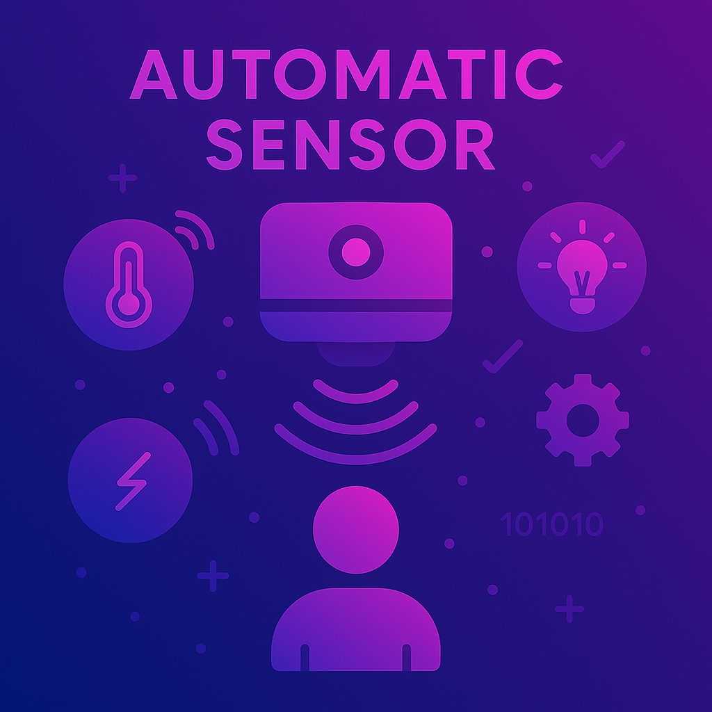

Simulasi teknologi sensor otomatis berbasis kode untuk mendeteksi gerakan dan visual secara real-time..
Sensor otomatis adalah sistem yang mengintegrasikan perangkat keras dan perangkat lunak, seperti sensor PIR, kamera, dan sensor ultrasonik, untuk mendeteksi pergerakan atau perubahan visual secara otomatis tanpa intervensi langsung dari manusia. Sistem ini banyak diterapkan dalam aplikasi smart home, sistem keamanan, serta otomasi industri...
Deteksi otomatis terhadap pergerakan di area sekitar sensor..
Mendeteksi pola visual atau QR code secara otomatis.
# Deteksi gerakan dengan sensor PIR
import random
def deteksi_gerakan():
return random.choice([True, False])
if deteksi_gerakan():
print("Gerakan terdeteksi!")
else:
print("Tidak ada gerakan")
# Deteksi QR Code (simulasi)
import cv2
def deteksi_qr(gambar):
detector = cv2.QRCodeDetector()
data, _, _ = detector.detectAndDecode(gambar)
return data
print(deteksi_qr("gambar_qr.png"))